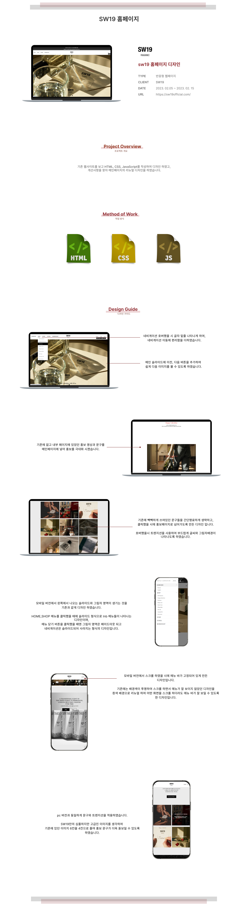

- Name : 윤루경
- Birth : 2002.01.10
- Address : 서울시 강서구 가양동
- Phone : 010-8919-3405
- Email : dbsfnrud@naver.com
로딩중
YUN RU KYUNG
CREATIVE PUBLISHER
협업을 생명처럼 여기는 웹퍼블리셔 윤루경 입니다.
협업을 위해 개인 실력을 상시 점검하고 점진적으로 발전해 나가며
효율적인 시멘틱 웹사이트 구축을 위하여
늘 발전 해나가며 언제든 준비 되어 있습니다.
스크롤바를 내리면 작품을 감상 할 수 있습니다
ABOUT ME
VISION
남들이 새롭게 구상하지 못하는 방향까지도 인도해가는 퍼블리셔가 되고 싶습니다.
요즘 빠르게 변화하는 세대들에게 눈 맞춰 가며 트렌드의 흐름을 빠르게 읽고
반영시키면서도
기술 스택마저 완벽하게 다루는 그런 퍼블리셔가 제 목표입니다.
끝없이 탐구하고 창의적으로 이끄는 사람이 되겠습니다.
WHAT CAN I DO?
'성장곡선을 계속해서 그려나가자 '라는 마음으로 성장을 위해 매일 끈임없이 노력하고
있습니다.
HTML5 & CSS3 시멘틱 페이지를 ZenCoding(EMMET), SCSS로 코딩할 수
있습니다.
클라이언트의 요구사항을 적극적으로 반영하고 트렌드를 빠르게 파악하여 UI/UX 디자인에 반영할 수 있는 능력은 저의 최고의 장점 중 하나입니다.
JS 플러그인을 사용에 그치지 않고 필요한 기능을 직접 구현할 수 있는
Javascript/jQuery/React 로직구현이 가능합니다.
디자인과 새로운 코딩 기법을 배우는 것이 성장에 도움이 되어 정말 즐겁습니다.
- RWD 반응형 웹디자인
- ZenCoding(EMMET) & SCSS
- HTML5 DTD 유효성 검사 통과
- Javascript &jQuery/React 로직구현
- MVC 패턴의 페이지 구성
- 웹접근성을 향상시킨 시멘틱 페이지
WORK STYLE
- HTML5 시멘틱과 CSS3웹페이지를 구현
- 구조와 디자인, 기능을 분리한 MVC패턴을 구현
- 자바스크립트와 jQuery / React를 구현
다른 사람이 말하는 나
-
이은규
함께 이야기를 나누는 시간이 늘 즐거운 사람사람을 즐겁게 해주는 분위기 속에서 웃으면서 일을 하고싶다? 디자이너 루루가 함께해야 한다.
-
이다빈
Fast learner. Steady listener~!한 번 알려주면 바로 접목하여 자신의 것으로 만드는 미친 카피력! 누구든 도둑 맞을 재능일지도?
-
김민우
모든 일을 성실하게 대하는 사람디자인과 코딩을 모두 게을리하지 않는 하이브리드 캐릭터, 모든 업무들을 성실하게 수행하고 시간 약속 등을 잘 지킨다.
SKILL
탁월한 UX분석능력과 Emmet/Zencoding 활용
-
UX/UI 디자인
사용자의 Context와 Needs를 파악하고
Problem을 해결할 수 있는 Insight 도출 -
반응형 웹표준
시멘틱을 지향하는 HTML/CSS 작성능력 보유,
자바스크립트와 제이쿼리 기반의 로직 구현 가능
SASS 전처리기와 리액트 라이브러리 활용
-
Sass Preprocessor
협업 웹코딩의 필수 기술인 SCSS를 이용한
CSS 스타일링을 원활이 사용할 수 있습니다. -
리액트 라이브러리
국내 프론트엔드 시장의 대세 리액트 코드구현,
자바스크립트와 제이쿼리 기반의 로직구현 가능
ABILITY
젠코딩
HTML5
CSS
jQuery
웹기획
디자인
95%
리더쉽
적극성
창조성
사교성
책임감
정직성
온라인이력서
'성장곡선을 계속해서 그려나가자 '라는 마음으로 성장을 위해 매일 끈임없이 노력하고
있습니다.
HTML5 & CSS3 시멘틱 페이지를 ZenCoding(EMMET)으로 코딩할 수 있습니다.
클라이언트의 요구사항을 적극적으로 반영하고 트렌드를 빠르게 파악하여 UI/UX 디자인에
반영할 수 있는 능력은 저의 최고의 장점 중 하나입니다.
JS 플러그인을 사용에 그치지 않고 필요한 기능을 직접 구현할 수 있는
Javascript/jQuery/React 로직구현이 가능합니다.
디자인과 새로운 코딩 기법을 배우는 것이 성장에 도움이 되어 정말 즐겁습니다.
UX DESIGN
작품리스트
이전 다음내가 생각하는 사용자경험 - User Experience
UX의 정의에 대해서 알아보고, 다양한 UX의 사례들, 특히나 성공적인 UX라 불리는 사례들을
보면서
사용자 경험을 바탕으로 어떤 제품이나 서비스를 구축하는 것의 중요성을 깨달았다.
내가 생각하는 UX란, 사용자들을 분석하고 그들의 경험을 최적화하기 위한 것이라고
생각한다.
또한, 서비스의 핵심 가치를 화면에 배치 안에 녹여드는 것이라고 생각되며, 처음 사용하는
사용자일지라도 화면만으로 별다른 설명없이 명확히 설계하고 드러나는 것이 좋은 UX라고
생각한다.
서울역 버스정류장 운행버스번호 노출
디자인과 UX의 차이
- 1. 케찹
-
사용자가 편리하게 사용할 수 있도록
입구 위치를 바꾼 디자인 사례
- 2.계량 컵
-
계량 측정하기 위해 수평을 맞추도록 하는
반복 없이 그 상태에서 계량할 수 있도록 만든 사례
UX DESIGN WORKS
-
Persona 사용자
정보구조설계(IA), 경험맵등을 작성할 때 의사결정의 준거점으로 활용하는 페르소나 Motive, Pain Point, Needs

-
UX 조사보고서
사용자경험에 대한 정의, 다양한 UX의 사례, 내가 생각하는 User Experience 토스, 카카오뱅크, 당근마켓
-
디자인과 UX의 차이
일상생활에서 발견한 "디자인과 UX(사용자경험)의 차이" 사례, 문제에 대한 근본원인 서비스경험 시나리오 기획


PORTFOLIO
SW19 리뉴얼 디자인
SW19 Renewal Design
기존 웹사이트의 개선사항을 찾아 메인페이지를 리뉴얼 디자인하였습니다.
메가커피 기존 웹사이트의 간결함과 깔끔함은 유지하며,
컬러 아이덴티티를 사용하여 브랜드 이미지를 강조하였습니다.
작업프로그램 : Figma, Visual Studio Code
작업기여도 : 100% 개인 작업

마티에 리뉴얼 디자인
Matie Renewal Design
기존 웹사이트의 개선사항을 찾아 메인페이지를 리뉴얼 디자인하였습니다.
메가커피 기존 웹사이트의 간결함과 깔끔함은 유지하며,
컬러 아이덴티티를 사용하여 브랜드 이미지를 강조하였습니다.
작업프로그램 : Figma, Visual Studio Code
작업기여도 : 100% 개인 작업

CJ NEWSROOM 디자인
CJ NEWSROOM Site Design
기존 웹사이트의 개선사항을 찾아 메인페이지를 리뉴얼 디자인하였습니다.
메가커피 기존 웹사이트의 간결함과 깔끔함은 유지하며,
컬러 아이덴티티를 사용하여 브랜드 이미지를 강조하였습니다.
작업프로그램 :Visual Studio Code
작업기여도 : 100% 개인 작업
메가커피 디자인
MEGA COFFEE Site Design
기존 웹사이트의 개선사항을 찾아 메인페이지를 리뉴얼 디자인하였습니다.
메가커피 기존 웹사이트의 간결함과 깔끔함은 유지하며,
컬러 아이덴티티를 사용하여 브랜드 이미지를 강조하였습니다.
작업프로그램 : Figma, Visual Studio Code
작업기여도 : 100% 개인 작업
CONTACT
귀사에 입사를 지원합니다.
저의 웹퍼블리싱 이야기 입니다.
질문을 선택하시면 정리된 답변을 보실 수 있습니다.
- 1. 웹표준, 웹접근성, 웹호환성의 차이점은?
-
웹 표준을 준수하는 것만으로 웹 호환성과 웹 접근성이 보장되지 않는다. 웹 호환성은 OS, SW에 독립적인 상호운용성 확보를 우선시하고, 웹 접근성은 보편적 접근성 확보를 우선시한다.
- 2. 독타입을 사용하는 이유는?
-
웹 페이지의 문서 유형을 설정하기 위해서 사용합니다. 독타입을 설정하지 않거나 잘못 설정하면 브라우저에 따라 화면이 다르게 나오거나 렌더링이 달라지게 때문에 독타입을 설정해야 합니다.
- 3. 자바스크립트 라이브러리 사용 시 가장 큰 장점은?
-
html안에서 바로 script 태그안에서 코드를 작성 할 수 있기 때문에 개발 속도가 빠릅니다. 또한 컴파일 과정이 필요 없기 때문에 즉시 실행이 가능하고 디버깅도 간편 합니다.
- 4. display:inline 과 display:block의 차이점이 무엇인가요?
-
display:inline은 텍스트 요소를 말하여 display:block은 박스 영역을 의미합니다.
- 5. ::after와 ::before는 언제 사용하는가?
-
요소에 가상으로 요소를 줄 때 사용합니다. 즉 마크업의 수정없이 또 다른 요소를 줄 때 많이 사용합니다.
더욱 궁금하신 점은 면접시 말씀드리겠습니다. 감사합니다~!
본 페이지는 저의 개인 포트폴리오용으로 제작되었으며, 상업적인 목적과 관련이 없음을
알려드립니다.